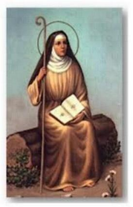

"UM CORA��O AMOROSO"
GENEROSIDADE CONSTANTE
Nunca ningu�m que necessitasse ou
algum pobre que se aproximasse de Edwiges para solicitar um aux�lio, saiu de m�os
vazias. O Padre 
- �Ela possu�a grandes rendas financeiras. Mas n�o retinha nem a cent�sima parte do que recebia mensalmente, para seus gastos pessoais e as necessidades de sua fam�lia. As grandes quantias que permaneciam intoc�veis, ela distribu�a para os pobres e para as Igrejas. Quando terminava os seus recursos, recorria aos de seu marido, que tamb�m era muito generoso, para socorrer os pobres e necessitados.�
Edwiges possu�a uma Granja que se chamava �Zeuina� . Nela colhia verduras, batata, milho, tomates, cenouras, feij�o, arroz e muito mais. Abateu-se sobre aquela regi�o uma grande escassez de alimentos, provocando uma abomin�vel carestia. O povo menos favorecido em recursos financeiros, come�aram a passar necessidades. Edwiges mandou proclamar nas �reas vizinhas, que todos os flagelados se dirigissem a Granja para receberem aux�lio. Reunidos todos aqueles pobres que n�o eram em pequeno n�mero, ela mandou que lhes fossem distribu�dos os alimentos conforme as suas necessidades. E assim aconteceu. Acabados os alimentos que estavam estocados, ela mandou que fossem distribu�das as carnes, e depois os queijos, e depois barris de �leo e caixas de sal, a fim de que aqueles famintos pudessem cozinhar e temperar adequadamente os alimentos com saud�vel sabor.
O N�MERO TREZE
O carinho pelos pobres estava tamb�m unido a uma devo��o pelo n�mero treze. Numa �poca passou a reunir periodicamente treze pobres, em mem�ria de CRISTO e seus Doze Ap�stolos. Quando viajava de um lugar para outro, mandava lev�-los em carruagens e mandava hosped�-los em acomoda��es escolhidas para que ficassem perto dela. Na hora das refei��es, fazia com que todos os treze se assentassem e ela se incumbia de servir fartamente cada um deles, e s� ent�o, se assentava no seu lugar para a sua refei��o. Contentava-se com muito pouco, com os alimentos mais simples. Os pratos de carne, ou comidas finas e preparadas com requinte, ela fazia quest�o de distribuir aos seus treze pobres. Embora fosse rica, era a mais pobre entre os seus amados pobres.
PROTETORA DOS ENDIVIDADOS
Edwiges se esfor�ava em todas as oportunidades para imitar CRISTO, e lendo no Novo Testamento, o Evangelho de NOSSO SENHOR escrito por S�o Mateus, ela mantinha presente em seu cora��o a Ora��o do Disc�pulo ensinada por JESUS, e as palavras de recomenda��o de Confian�a no PAI ETERNO. (Mt 6,7-15) (Mt 7, 7-11). Ela n�o s� distribu�a os seus bens como tamb�m perdoava aqueles que lhe devia.
E foi assim que nasceu uma especial devo��o a Santa Edwiges: ela passou a ser invocada como �Padroeira dos Endividados� por que quando em vida, algu�m que estivesse �apertado financeiramente�, com a �corda no pesco�o�, cheio de d�vidas, e sem condi��es de pag�-las, ia correndo procurar a Duquesa Edwiges, e ela generosamente cobria o valor da d�vida com o seu pr�prio dinheiro, ou se a d�vida fosse com ela mesma, imediatamente perdoava o devedor e cancelava o d�bito dele.
UMA INTERVEN��O IMPRESSIONANTE
Edwiges era muito querida por NOSSO SENHOR!
Nas oportunidades o SENHOR se manifestava atendendo a sua intercess�o, para real�ar e revelar com evid�ncia, que ELE apreciava muito as virtudes e o comportamento pessoal dela.
Em certa ocasi�o, um fac�nora, inimigo declarado do Duque Henrique, esposo de Edwiges e advers�rio proscrito daquela regi�o, fora finalmente capturado pelas autoridades. A senten�a para ele foi � morte na forca.
Para que a not�cia da captura e condena��o � morte do fac�nora n�o chegasse aos ouvidos de Edwiges, o Duque mandou tir�-lo do c�rcere mesmo � noite, para que sem demora, na madrugada ele fosse executado. Por que ele sabia que se Edwiges tivesse not�cias do acontecimento, iria interceder pelo bandido, como generosamente costumava fazer por todos. Os executores fizeram todo o preparo rapidamente e logo ao raiar do dia, colocaram o fac�nora na forca, deixando o seu corpo pendurado, balan�ando no espa�o.
Aquela noite Edwiges tinha ido a Igreja, e rezando diante do SENHOR, n�o se apercebeu que as horas passaram ligeiras. Como ela costumava regressar a sua casa pela porta da Sacristia, o Sacrist�o fechou a Igreja e ficou esperando a Duquesa terminar as suas preces. Ela regressou ao seu lar quando o dia come�ava a raiar. O Duque foi ao seu encontro. E na verdade, ela j� conhecia o fato do fac�nora, pois lhe tinha sido contado por uma acompanhante fiel. Por isso, logo que o Henrique a encontrou, ela primeiro censurou o seu marido pela crueldade que ele demonstrou. Depois lhe pediu que encaminhasse a ela aquele homem j� sentenciado � morte.
Henrique presumindo que naquela hora j� estivesse tudo consumado e o malfeitor morto, para consolar a piedade da esposa, disse-lhe:
- �Dou-lhe esse e mais outros desse tipo que quiser�...
Apressadamente ela chamou o seu procurador e mandou que ele fosse com urg�ncia ao local da execu��o, e lhe trouxesse o condenado sem nenhum arranh�o.
O homem meio preocupado foi cumprir a ordem da Duquesa, embora imaginasse que naquele hor�rio tudo j� estava acabado. Pegou a carruagem e foi r�pido para o local do enforcamento. O malfeitor estava pendurado pelo pesco�o... Rapidamente ele cortou a corda e o corpo caiu ao ch�o. E aquele que todos julgavam um cad�ver frio, com admira��o de todos que assistiram a execu��o, estava bem vivo e foi conduzido a presen�a da Duquesa Edwiges. Aquele encontro mudou a vida dele. O fac�nora se converteu e se tornou uma pessoa de bem, inclusive trabalhando no Ducado. Este fato foi relatado em Roma, naquela �poca, por v�rias testemunhas, no processo de Beatifica��o de Edwiges.
Sem d�vida, aconteceu uma interven��o Divina. DEUS NOSSO SENHOR teve miseric�rdia do pecador e perdoou os seus muitos pecados, pela intercess�o piedosa de Edwiges.
ESPINHA DE PEIXE E CATARATA
A Irm� Raslaua era muito amiga de Edwiges, inclusive, foi professora e educadora da Duquesa na inf�ncia. Atualmente a Irm� foi eleita Abadessa no Mosteiro de Trebnitz.
Um dia, estando � mesa com Edwiges numa refei��o, aconteceu um acidente. Uma espinha de peixe encravou na garganta da Irm�. Ela disfar�adamente fez todas as tentativas poss�veis e n�o conseguiu remov�-la. Levantou-se foi ao banheiro e tentou retir�-la provocando v�mito. N�o deu resultado. Vendo o perigo e sentindo muitas dores na garganta, voltou � mesa e com dificuldade exp�s o caso a Edwiges. Compadecida com o sofrimento da sua amiga, rezou a DEUS e fez o Sinal da Cruz sobre a amiga. Imediatamente a espinha foi expelida. O fato causou alegria em todos, e naquele dia foi o assunto que dominou no Mosteiro.
Esta mesma Irm� Raslaua perdeu um irm�o que ela amava muito. Por isso chorou tanto a morte dele, que poucos dias depois lhe apareceu nos olhos uma pel�cula branca cinza, talvez catarata, considerando a sua adiantada idade, e que lhe causava muito inc�modo, atrapalhando sensivelmente a sua vis�o. Com o passar dos dias o problema se agravou e ela ent�o recorreu novamente a sua amiga, e Edwiges cheia de compaix�o, lhe disse:
- �V�, pegue o meu Salt�rio e com ele trace o Sinal da Cruz sobre os seus olhos escurecidos e ficar� boa�.
A Irm� obedeceu acreditando nas palavras de Edwiges, recordando-se das palavras de CRISTO: �Tudo � poss�vel aquele que cr�. Pegou o Salt�rio de Edwiges e tra�ou um Sinal da Cruz sobre os olhos, e imediatamente desapareceu aquela mancha que impedia a sua normal vis�o. NOSSO SENHOR carinhosamente aceitou a intercess�o de Edwiges e no ato da execu��o do Sinal da Cruz pela Irm�, vendo a sua f� sincera e decidida, curou os seus olhos.
UN��O DOS ENFERMOS
Algum tempo antes de agravar a enfermidade que a levou a morte, ela pediu que chamassem Frei Mateus, que era o seu Confessor. Depois que se confessou solicitou ao Padre que lhe administrasse tamb�m o Sacramento da Un��o dos Enfermos.
As Irm�s do Mosteiro ficaram apreensivas, pois sabiam muito bem, que Edwiges n�o fazia nada sem ter a absoluta certeza daquilo que predizia. E desse modo, as Irm�s perceberam que o fim de Edwiges estava pr�ximo.
Naquela �poca o Sacramento da Un��o dos Enfermos somente era aplicado ao fiel que estivesse realmente em risco de morte. Hoje, a Igreja amadureceu uma melhor interpreta��o para a utiliza��o deste Sacramento, e assim, n�o somente aqueles que est�o em risco de morte � que devem receb�-lo, mas todos os enfermos, com as suas diferentes enfermidades, por que eles recebendo o Sacramento ensejar�o ao ESP�RITO SANTO derramar em seu corpo combalido pela doen�a, as gra�as necess�rias ao seu restabelecimento, ou conforme, sempre de acordo com a Vontade Suprema de DEUS, receber�o as gra�as que purificar�o o seu esp�rito e os conduzir�o a felicidade eterna. Mas naquela �poca n�o era assim, e as Irm�s que conheciam muito bem Edwiges, viram que aquela solicita��o, com certeza estava relacionada com sua pr�xima morte.